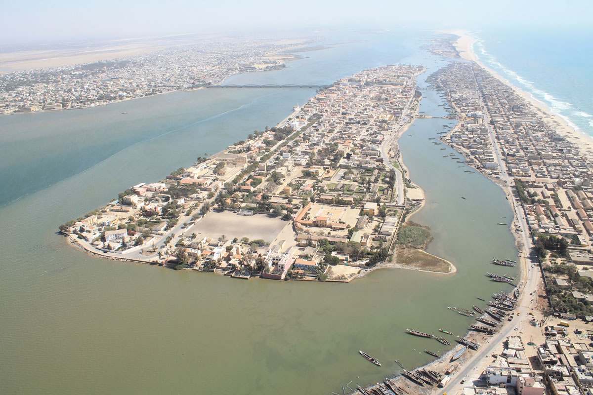
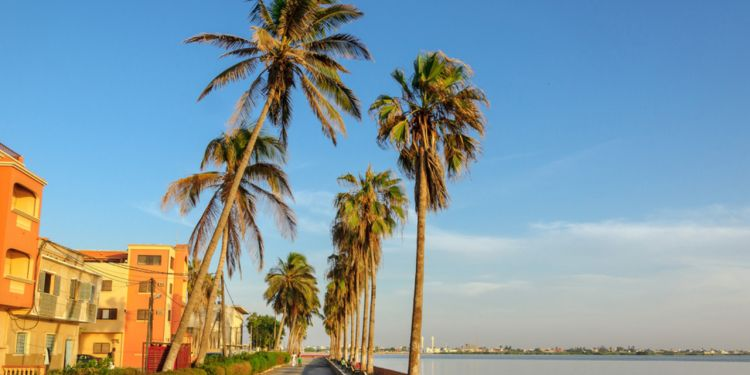
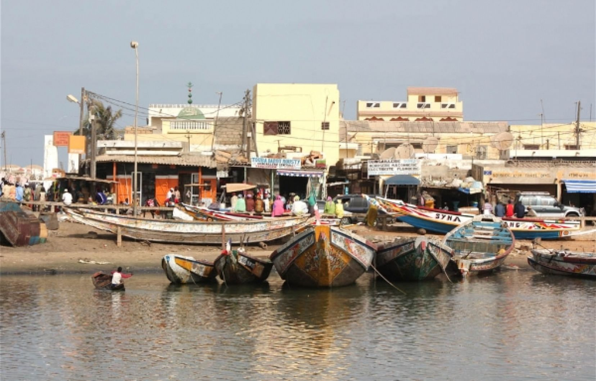
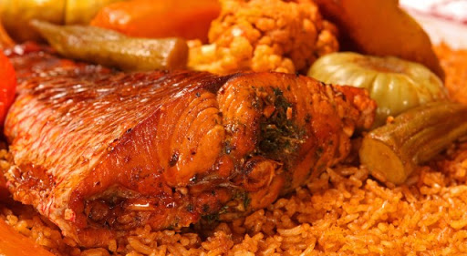
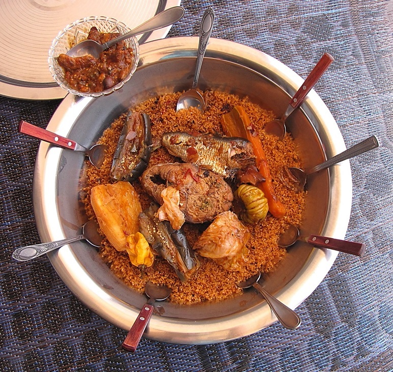
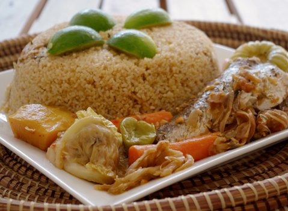

Saint-Louis, Ndar en wolof, souvent appelée « Saint-Louis-du-Sénégal »,
est l'une des plus grandes villes du Sénégal et, historiquement, l'une
des plus importantes, comme en témoigne son inscription sur la liste du
patrimoine mondial de l'UNESCO. C'était une des quatre communes ("Quatre Vieilles")
historiques du Sénégal à statut de département français.
LES LIEUX TOURISTIQUES DE SAINT-LOUIS
 
Saint-Louis, qu'on surnommait la « Venise africaine » est classée au répertoire du patrimoine mondial
par l'Unesco depuis l'an 2000.
Elle s'est lancée dans un ambitieux programme de rénovation de ses anciens bâtiments et a commencé
à transformer les entrepôts en restaurants et en hôtels.
La ville conserve de très nombreuses maisons, typiques de l'époque coloniale, avec leur façade de chaux,
leur double toiture en tuile, leur balcon en bois et leur balustrade en fer forgé.
La musique jazz, amenée par les soldats américains, au moment de la Seconde Guerre mondiale,
a fait éclore toute une génération de jazzmen africains. Le Festival international de Jazz de Saint-Louis
a été créé en 1992 et a connu début mai 2004, sa douzième édition.
LA Pêche A SAINT-LOUIS

.jpg)

Guet Ndar est le quartier des pêcheurs de Saint-Louis. Les milliers de pirogues stationnées sur la plage de ce coin de la Langue de Barbarie permettraient de faire transiter 30 000 tonnes de poisson chaque année.
LE FAMEUX TIEBOU-DIEUNE A SAINT-LOUIS
  
La cuisine SAINT-LOUISIENNE est souvent décrite comme la plus riche et la plus variée d'Afrique de l'Ouest.
Elle présente quelques similitudes avec celles des autres pays de l'Afrique de l'Ouest, mais elle a également
subi d'autres influences : Afrique du Nord, France ou Portugal
Relativement peu connue en Europe en dehors des communautés issues de l'immigration et de quelques restaurants
de grandes villes, elle a attiré l'attention des médias en 2004 au moment de la publication du livre de Youssou N'Dour,
La Cuisine de ma mère.